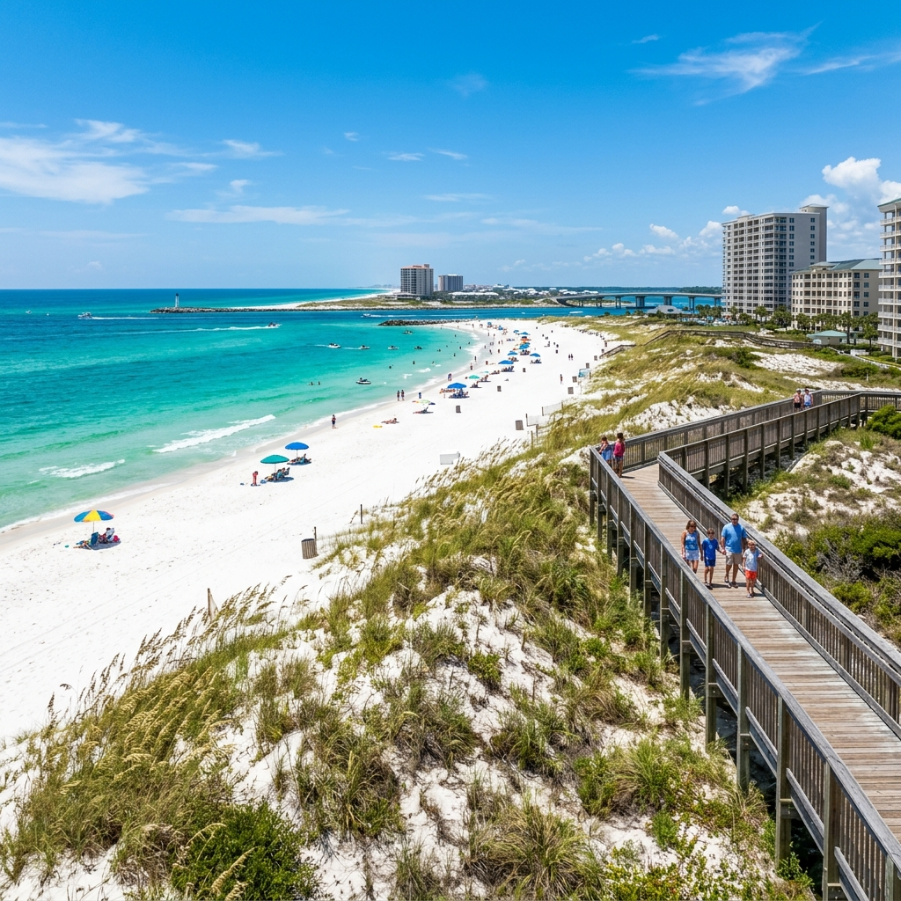
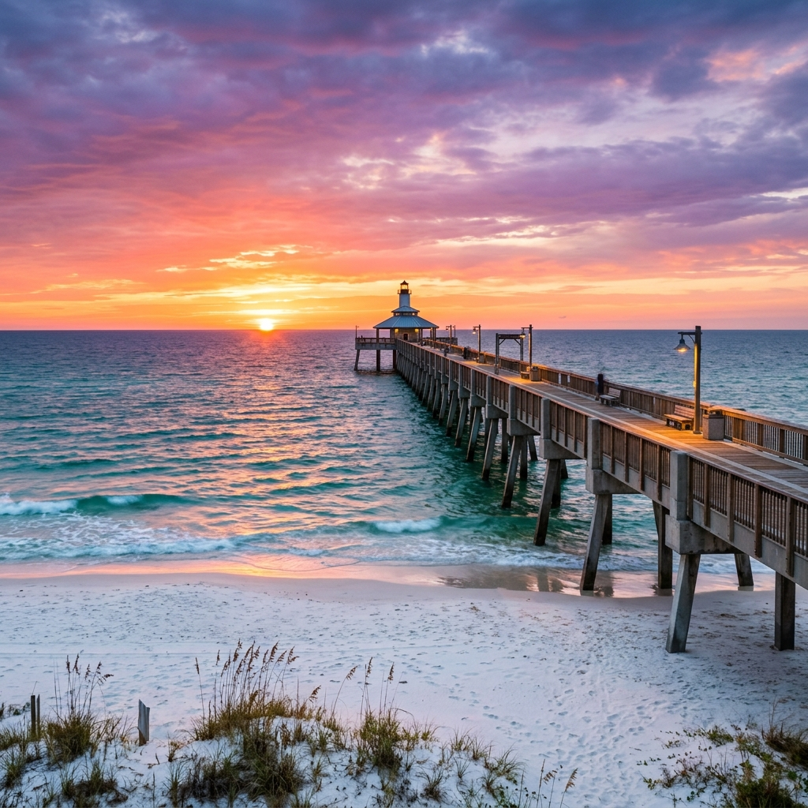
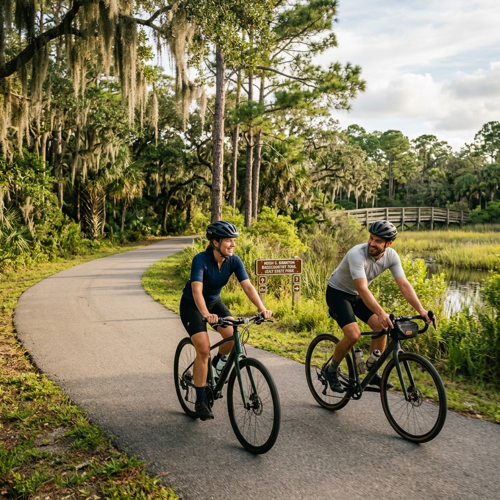

From groomed public beaches with full amenities to pristine stretches of undeveloped coastline inside a national wildlife refuge. Here's where to find the best sand on Alabama's Gulf Coast.
Gulf Shores Beaches
The heart of the Alabama coast — easy access, full amenities, and the widest selection of public beach entries.
Gulf Place (Main Public Beach)
GULF SHORES
Hwy 59 at the beach · Paid parking
The first beach you hit coming south on Hwy 59 — and the most popular. Best-groomed sand on the coast with paid parking lots, restrooms, showers, and lifeguards during peak season. The hub of Gulf Shores beach life.
13th Street Public Beach
GULF SHORES
W Beach Blvd at 13th St · Free parking
A local favorite with free street-side parking — get there early to snag a spot. Features a dune walkover to the beach, outdoor showers, and restrooms. Less crowded than Gulf Place with the same beautiful white sand.
Lagoon Pass Beach
GULF SHORES
2.9 mi west of Hwy 59 · Restrooms
Tucked 2.9 miles west of Hwy 59 on Beach Blvd. A quieter option with restrooms, a fishing pier, and outdoor showers. Great for families who want more space and a laid-back vibe away from the main beach crowds.
Orange Beach Beaches
Wide stretches of sand, well-maintained public access points, and some of the best dune systems on the coast.

Alabama Point East
TOP CHOICE
0.3 mi east of Perdido Pass Bridge
Over 6,000 feet of wide beach with natural dunes and crystal-clear water at the pass. Features elevated boardwalks, picnic pavilions, and full facilities. The best 'big beach' vibe in Orange Beach.
One of Orange Beach's most popular public access points. Restrooms, outdoor showers, and a handicap-accessible boardwalk to the sand. Convenient location at the intersection of Hwy 182 and Hwy 161 with nearby shopping and dining.
Gulf State Park
6,150 acres of pristine coastal ecosystem, 28 miles of trails, and the legendary 1,500-foot fishing pier.

Gulf State Park Pier
MUST VISIT
E Beach Blvd · 1,540 feet long
The second-longest pier on the Gulf of Mexico. Recently renovated and perfect for fishing, sightseeing, or catching the most incredible sunsets in Alabama. Full tackle shop and restrooms on-site.

Hugh S. Branyon Backcarpenters Trail
ADVENTURE
28 miles of trails · Hiking & Biking
A massive network of over 15 trails that wind through 7 distinct ecosystems. Rent a bike and explore butterfly Gardens, freshwater marshes, and towering slash pines. Watch for bald eagles and gators!
Lake Shelby
LAKEFRONT
Kayaking & Paddleboarding · Picnic area
A 900-acre freshwater lake just steps from the Gulf. Rent kayaks, paddleboards, or pontoons for a day of freshwater fun. Great for picnics and family swimming in the designated beach area.
Fort Morgan Beaches
The wild side of the peninsula — undeveloped coastline, wildlife refuge trails, and dog-friendly sand.
Bon Secour NWR Beach
FORT MORGAN
12295 State Hwy 180 · No facilities
Part of the Bon Secour National Wildlife Refuge — a pristine, undeveloped stretch of natural beach. No restrooms, no showers, no concessions. Just untouched sand, sea oats, and nesting sea turtles. Bring everything you need and leave no trace.
Pine Beach Trail
FORT MORGAN
Bon Secour NWR · 1.5 mi hike
A 1.5-mile hike through live oaks, slash pines, and coastal marshes to a secluded beach inside Bon Secour NWR. One of the most rewarding walks on the coast — you earn this beach. Virtually no crowds, even in peak summer.
Fort Morgan Public Beach
FORT MORGAN
20 mi west of Gulf Shores · Dogs allowed
At the very tip of the Fort Morgan peninsula, 20 miles from Gulf Shores. The beach wraps around the historic Civil War-era Fort Morgan. Dogs are welcome here — one of the few beaches on the coast where your pup can tag along.
♿
Beach Accessibility
Several Gulf Shores and Orange Beach public access points offer beach access mats — firm roll-out paths laid over the sand so wheelchairs, strollers, and walkers can reach the water's edge. Check with the city for current mat locations, as they are typically placed seasonally at high-traffic access points including Gulf Place and Cotton Bayou.
🐶
Dogs on the Beach
Dogs are not allowed on Gulf Shores or Orange Beach public beaches. However, Fort Morgan beaches welcome dogs — making them the go-to destination for pet owners. Fort Morgan Public Beach at the tip of the peninsula is especially popular with dog owners. Keep your pup leashed and bring bags for cleanup.
Ready to Live Where You Vacation?
Imagine waking up to this every morning — 32 miles of white sand just minutes from your front door.